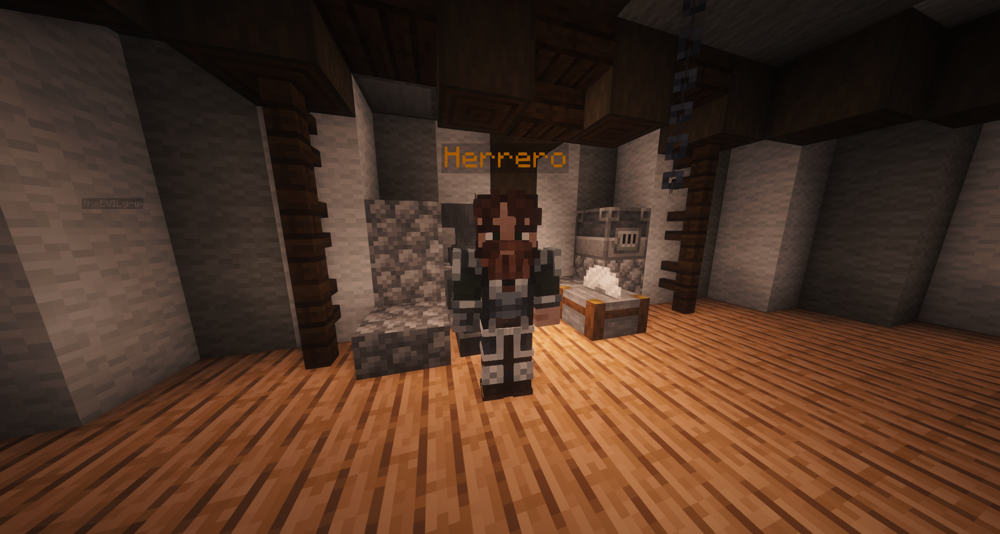

01
Encuentra al herrero
Lo reconocerás por el nombre Herrero sobre su cabeza. Suele estar en su taller, rodeado de yunques y hornos. Cuando te acerques te seguirá con la mirada.
Para hablar con él, haz clic sobre él: da igual si es clic derecho o izquierdo. Oirás el yunque y se abrirá su ventana.
